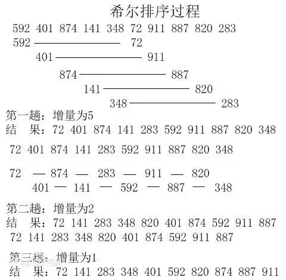

算法简介
希尔排序的核心在于间隔序列的设定。既可以提前设定好间隔序列，也可以动态的定义间隔序列。
动态定义间隔序列的算法是《算法（第4版》的合著者Robert Sedgewick提出的。
算法描述和实现
先将整个待排序的记录序列分割成为若干子序列分别进行直接插入排序，具体算法描述：
- <1>. 选择一个增量序列t1，t2，…，tk，其中ti>tj，tk=1；
- <2>.按增量序列个数k，对序列进行k 趟排序；
- <3>.每趟排序，根据对应的增量ti，将待排序列分割成若干长度为m 的子序列，分别对各子表进行直接插入排序。
仅增量因子为1 时，整个序列作为一个表来处理，表长度即为整个序列的长度。
